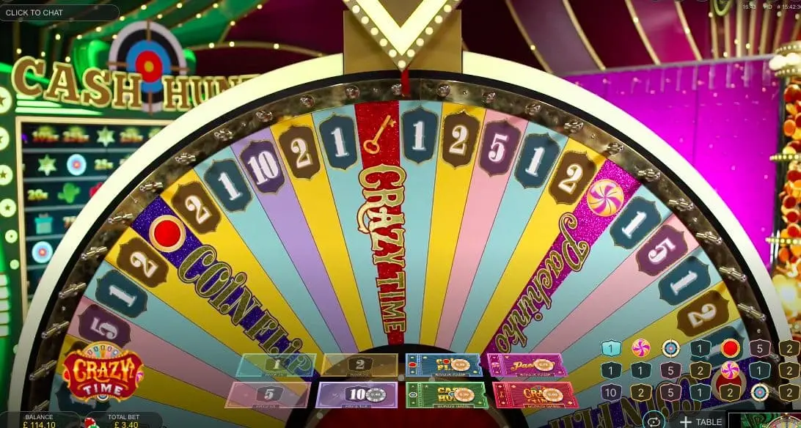

Crazy Time mit Bitcoin spielen. Crazy Time spielen mit Crypto

Stake ist der beste Ort, um Crazy Time Bitcoin Spiel zu spielen. Sie können dieses spannende neue Spiel mit Bitcoin spielen und echtes Geld gewinnen. Die Regeln sind einfach und die Auszahlungen sind großzügig. Aber es besteht immer noch die Möglichkeit, dass Sie alles verlieren, wenn Sie nicht vorsichtig sind. Aus diesem Grund geben wir Ihnen einige Tipps, wie Sie Crazy Time im Stake Casino sicher und effektiv spielen können!
Übersicht
- Crazy Time ist ein neues Spiel von Stake Casino.
- Crazy Time ist ein Videospielautomat mit 5 Walzen, 25 Gewinnlinien, einem Jokersymbol und Freispielen.
- Das Spiel basiert auf dem beliebten japanischen Arcade-Spiel Pachinko.
Verrückte Zeitabschnitte
- Crazy Time ist ein 5-Walzen-Slotspiel.
- Das Spiel bietet 4 Bonusrunden.
- Das Spiel bietet bis zu 20.000x Ihren Einsatz.
- Das Spiel bietet 4 Live-Moderatoren.
- Das Spiel bietet bis zu 4.000x Ihren Einsatz.
Preise und Multiplikatoren
- Die Multiplikatoren basieren auf der Anzahl der gespielten Linien.
- Die Multiplikatoren basieren auf der Anzahl der gesetzten Münzen.
- Der Multiplikator hängt von der Anzahl der gewonnenen Münzen ab.
- Der Multiplikator richtet sich nach der Anzahl der verlorenen Münzen.
- Der Multiplikator basiert auf der Anzahl der zurückgegebenen Münzen
Freispiel-Bonusrunde
In dieser Bonusrunde erhalten Sie für jede Münze, die Sie auf Ihrer Bank haben, ein Freispiel. Sie können wählen, ob Sie die Freispiele spielen oder sich auszahlen lassen möchten. Wenn Sie sich entscheiden, die Freispiele zu spielen, wird das Spiel fortgesetzt, bis Sie alle Münzen verlieren.
Mit 4 Bonusrunden, 4 Live-Moderatoren und dem bis zu 20.000-fachen Ihres Einsatzes ist klar, dass Crazy Time ein Spiel für Mutige ist. Für alle, die gerne ein Risiko eingehen, ist dieses Spiel genau das Richtige. Aber bitte spielen Sie verantwortungsbewusst!
Spielen Sie Crazy Time im Stake Casino
Spielen Sie Crazy Time im Stake Casino. Beginnen Sie mit der Wahl, ob Sie mit Bitcoin, Ethereum oder Litecoin spielen möchten. Wir empfehlen immer, mit der Kryptowährung zu spielen, von der Sie am meisten in Ihrer Brieftasche haben. Sobald Sie ausgewählt haben, mit welcher Währung Sie spielen möchten, klicken Sie auf die Schaltfläche „Drehen“ und lassen Sie es krachen!
Wenn Ihnen nicht gefällt, was während einer Drehung auf dem Bildschirm passiert, ist das kein Problem. Auch unsere Walzen drehen sich immer weiter, sodass Sie später noch viele weitere Gewinnchancen haben. Sie können auch jederzeit eine Pause einlegen, wenn es langweilig oder frustrierend wird. Aber bis dahin haben Sie hoffentlich genug Guthaben für einen weiteren Dreh auf Ihrem Konto.
Eine neue Art, Crazy Time zu spielen
Als Krypto-Spieler müssen Sie sich nicht an die traditionellen Methoden halten, um Crazy Time zu spielen. Es gibt zwei Hauptmöglichkeiten, wie Sie Crazy Time mit Bitcoin spielen können. Beide beinhalten die Verwendung Ihres BitPay-Kontos. Sie können Ihre BitPay-Brieftasche als Online-Casino-Konto verwenden, indem Sie Bitcoin darauf einzahlen. Dann wählen Sie aus, wie viel davon Sie am Pokertisch oder an den Spielautomaten des Casinos in echtes Geld umtauschen möchten. Sie können Ihre BitPay-Brieftasche auch mit einer anderen Kryptowährung oder Fiat-Währung verwenden. Sobald Sie dies getan haben, gehen Sie hierher zurück und klicken Sie auf „Spielen“.
Wie man das Crazy Time Bitcoin Spiel spielt
Wenn Sie bereit sind, Crazy Time zu spielen, brauchen Sie eine Bitcoin-Brieftasche. Das ist ziemlich einfach. Gehen Sie einfach zu einer der vielen Online-Börsen und kaufen Sie Bitcoin mit Ihrer bevorzugten Zahlungsmethode. Wenn du es eilig hast, empfehlen wir Coinbase, weil es einfach und schnell geht (das Stake-Team nutzt diese Seite).
Sobald Sie etwas Bitcoin in Ihrer Brieftasche haben, gehen Sie zu https://www.stake.com/games/crazytime/. Wählen Sie dort „Play Crazy Time with BTC“ aus dem Menü und geben Sie ein, wie viel Geld jedes Spiel kosten wird (in BTC). Sie können umsonst oder um echtes Geld spielen! Sobald alles eingerichtet ist, können Sie anfangen zu spielen!
Das beste Spiel aller Zeiten?
Crazy Time ist ein lustiges Spiel. Es ist schnell, es ist progressiv und es ist sehr volatil. Wenn Sie Crazy Time mit Bitcoin spielen, werden Sie groß gewinnen!
Das Beste an Crazy Time ist für mich, dass ich nicht nur gegen andere Leute im Casino (oder auf meinem Computer) spiele. Ich spiele auch gegen das Haus – und manchmal sogar gegen die anderen Spieler. Das macht das Spiel zu einem tollen Erlebnis, weil jeder seine eigene Strategie hat. Außerdem versuchen alle, sich gegenseitig bei jeder Gelegenheit zu übertreffen.
Viele Spieler spielen Crazy Time schon seit Jahren. Und sie sagen, dass dieses Spiel viele Vorteile gegenüber anderen Spielen hat:
Wie viel können Sie gewinnen?
Das Spiel hat einen progressiven Jackpot. Das bedeutet, dass der Wert des Preises jedes Mal wächst, wenn jemand spielt. Der Jackpot kann jederzeit geknackt werden, und er wird in Bitcoin ausgezahlt!
Bitcoin Crazy Time at Stake.com lässt Sie dieses großartige Spiel mit Kryptowährungen spielen.
Bitcoin Crazy Time ist ein Spiel, das bei Stake Casino gespielt werden kann. Es ist ein bisschen wie die Lotterie, aber mit mehr Optionen und einer höheren Auszahlung. Sie wählen Ihre Zahlen, Sie können Bitcoin gewinnen.
Das Spiel gibt es schon seit einiger Zeit und ist bei Krypto-Spielern immer noch sehr beliebt. Wenn Sie dieses aufregende lotterieähnliche Spiel spielen möchten, müssen Sie nur ein Konto bei Stake Casino erstellen. Dann stellen Sie sicher, dass es mit Bitcoin oder anderen Krypto-Münzen finanziert ist. Sie können dann so viele Lose wie Sie wollen für nur $1 pro Stück kaufen!
Schlussfolgerung
Bitcoin Crazy Time ist das aufregendste Spiel im Internet und jetzt können Sie es bei Stake Casino spielen. Es macht Spaß, ist einfach zu lernen und bietet riesige Gewinne bis zum 10-fachen Ihres Einsatzes!